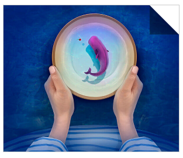

boder-width在平时的使用当中，都是给元素添加不同颜色，不同宽度的边框线来使当前元素和其他的元素区分开来。但是boder-width还有一些不为人知的属性，能发挥神奇的功能。
平时我们使用boder-width的时候，当前元素都是有宽度和高度的设置。但是如果这个元素宽度和高度为0时，我们设置boder-width的时候，会发生什么？
如上所示，出现了这种效果，4个boder边框，分别占据了div的4块三角边。这时候，如果我们把一条边去掉会怎样？
上面四个分别是border-top: 0px,border-left: 0px,border-bottom: 0px,border-right: 0px。每次去掉一条边，相应的一半就没了。
根据这个效果，我们可以做一个纯css的图形
比如上面的三角形，颜色，方向，大小都可以通过不同方向上的border-width去改变。
还有上面这个梯形效果，只要设置一下width的宽度，height为0。
还有许多复杂的图形也能做，比如六角星，五角星，五边型。但这些需要before和after伪元素来配合实现，而且不太适用平时的开发场景， 在这边就不详细描述了。有兴趣的同学可以去这个网址上看看纯CSS画的基本图形。
boder-width这种的效果，还可以用于翻页效果的实现，先看看demo吧。
实现的原理很简单，就是通过img图片的before伪元素的border-width的改变，加上过渡效果。代码可以直接看demo页面。